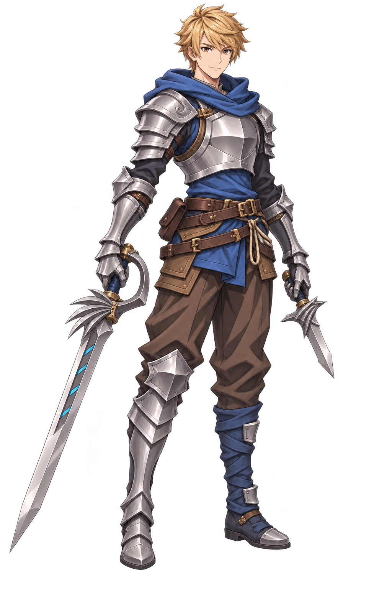

LONGSWORD & DAGGER / SD PIXEL / 8 DIRECTIONS v01
금발 장검·단검 · SD 픽셀 8방향 입상
기존 GC9 시안의 금발·청색 목도리·은빛 갑옷·장검과 단검을 짧은 SD 비율의 픽셀 표현으로 바꿨습니다. 45도 간격의 8방향이며, 양발을 딛고 두 무기를 낮게 든 입상입니다.
표시 배경
기준이 된 GC9 일러스트

짧은 금발·갈색 눈·청색 목도리와 후드·은빛 판금·갈색 벨트와 바지를 유지했습니다. 얼굴과 몸은 같은 SD 픽셀 비율로 다시 그렸습니다.
인체 오른손은 청색 사선 장식의 장검, 왼손은 짧은 단검입니다. 오른다리는 은빛 판금, 왼다리는 청색 천 장화이며 초승달 견갑은 오른쪽에 유지합니다.
8장은 실제 알파 투명 PNG입니다. 후면은 짧은 내려진 후드와 등판으로 이어 보완했고, 긴 망토는 추가하지 않았습니다. 위 버튼으로 밝은 배경과 어두운 배경에서 확인할 수 있습니다.
카드는 원본 PNG를 축소해 보여 줍니다. ‘원본 100%’는 실제 픽셀 크기로 열며 작은 화면에서는 내부 스크롤로 확인합니다. 생성 원본을 인위적으로 확대하지 않았습니다. 수작업으로 픽셀 격자·기준점을 정규화하거나 게임 애니메이션에 통합한 파일과는 구분합니다.